从 AWS Landing Zone 迁移至 Control Tower 1: 规划和实施
AWS Landing Zone 方案已经进入长期维护期, 不会再引入任何新的功能. AWS 建议用户使用 Control Tower 方案来管理企业多账户环境. 本文将示例如何从现有的 Landing Zone 方案迁移至 Control Tower 并列举迁移中的注意事项
迁移之前的状态
现存的组织单元 OU 结构 1
2
3
4
5
6
7
8
9
10
11Root
└── vopsdev-landing-zone
├── core
│ ├── yl-master
│ ├── yl-security
│ └── yl-log-archive
├── production
├── test
└── department
├── yl-itdev
└── yl-network
现存的 Service Control Policy/SCP: 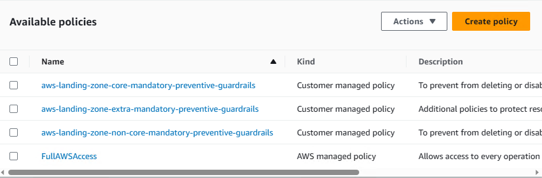
用于部署核心资源 + 基线资源的 AWS Landing Zone StackSets 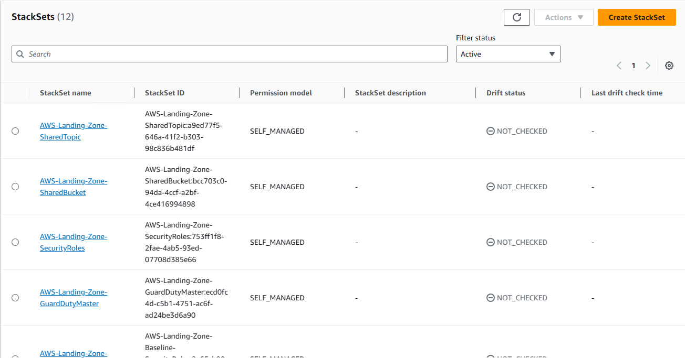
Service Catalog 下 Provisioned Product 对应每一个受控的账号 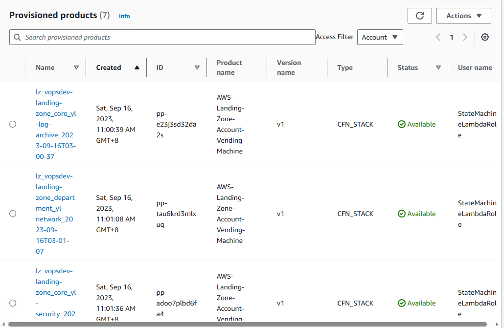
迁移的原理
虽然 Control Tower 是从 AWS Landing Zone 发展而来, 部分概念一脉相承, 但是经过多年的发展, 区别也越来越大, 很多资源命名也不一致. 因此这里所谓的 "迁移" 本质上就是删了重建.
原则上先完全删除清理现有的 AWS Landing Zone, 然后创建 Control Tower 是可行的. 但是这样会存在一段时间, 组织既不受 AWS Landing Zone 的管控, 也不受 Control Tower 的管控. 理想的情况是在 AWS Landing Zone 存在的同时, 启用 Control Tower, 然后再清理掉 AWS Landing Zone. 但是由于有一些全局资源会导致冲突 (主要是 config recorder), 因此合理的迁移步骤是:
- 检查 trusted access 设置
- 删除会导致冲突的 AWS Landing Zone 资源
- 启用 Control Tower Landing Zone
- 注册组织单元 (OU) 和账号到 Control Tower Landing Zone
- 清理 AWS Landing Zone 资源
- 重建定制的基线资源
检查 trusted access
到 AWS Organization, Services 下检查是否启用了 config 和 cloudtrail 的 trusted access. 如果启用了, 则禁用
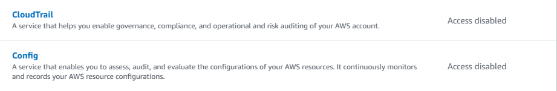
删除 config recorder
在 Cloudformation stackset 下找到 AWS-Landing-Zone-Baseline-EnableConfig, 删除其下的 stack instance,
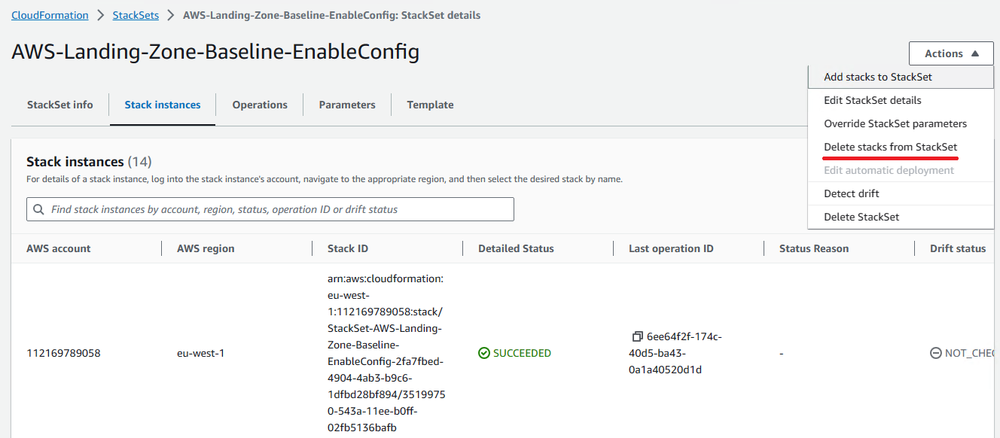
然后删除这个 stackset:
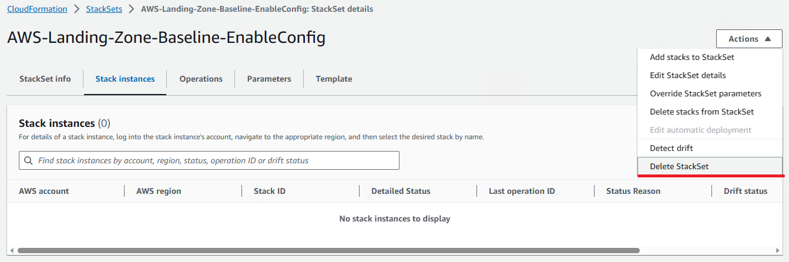
部署 Control Tower Landing Zone
在现存的组织单元结构中, AWS Landing Zone 核心账号位于 vopsdev-landing-zone:core 之下. 在 Control Tower 中核心账号改称为 shared accounts, 包含 audit account 和 log archive account, 其所在 OU 被称为 Fundational OU, 只能放在顶级. 可以重用现存的账号作为 shared accounts, 此处将重用 yl-security 作为 audit account, 重用 yl-log-archive 作为 log archive account. Control Tower Landing Zone 创建完成后, shared accounts 会被自动移动到 Fundational OU 下.
通常情况 audit account 和 log archive account 为专用账号, 不建议其中跑其他的工作负载. 但是如果这些账号中跑了额外的工作负载, 又引用了基于 OU 共享的资源, 则应该确保这些资源要共享给新的 Foundational OU 以避免造成对工作负载的影响.
部署 Control Tower Landing Zone 之前, 先从相关 OU 上 detach AWS Landing Zone 的 SCP 以避免干扰. 然后在 Control Tower 控制台下选择 Set up landing zone
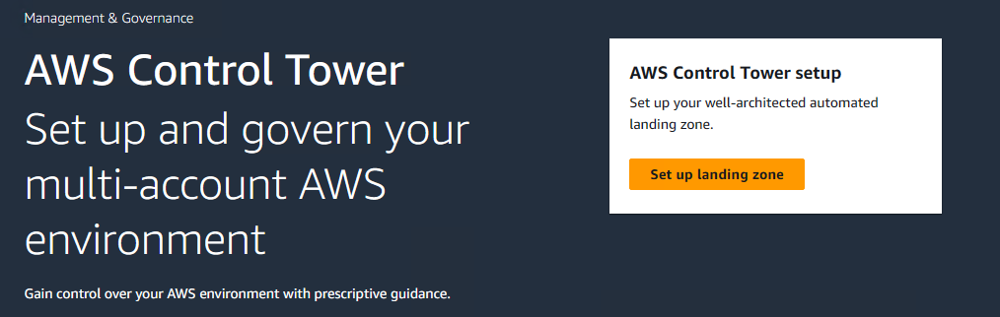
选择 home region, 这里是 us-west-2
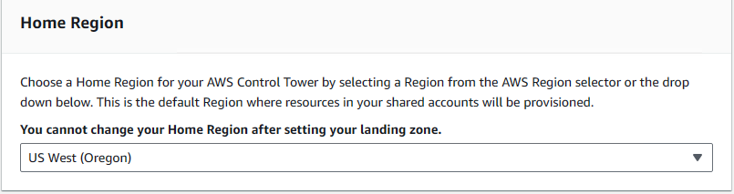
保持 region deny setting 默认, 不启用. 再添加额外的 workload region, 此处添加了 eu-west-1
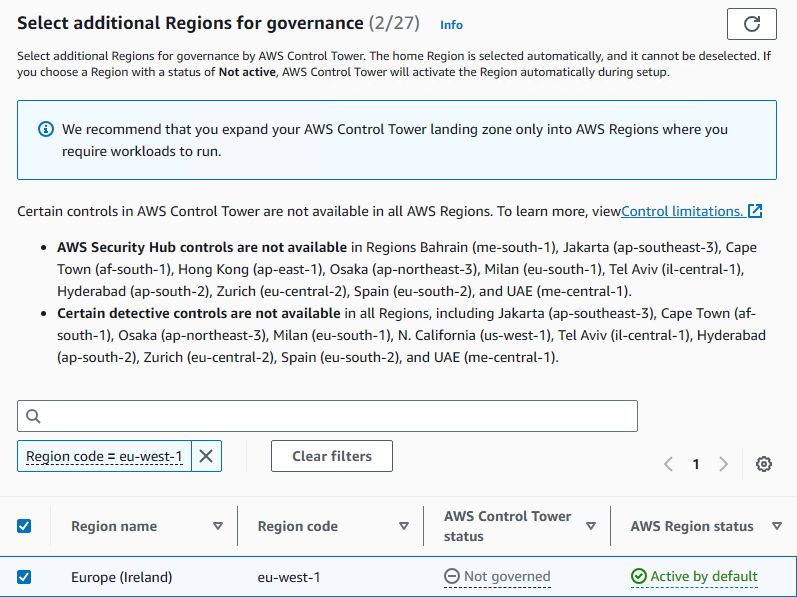
下一步设置 OU. 首先是 Foundational OU, 这里使用了默认的名字 Security. 选择不创建其他 OU, 因为后面会将现存的 OU 注册进来.
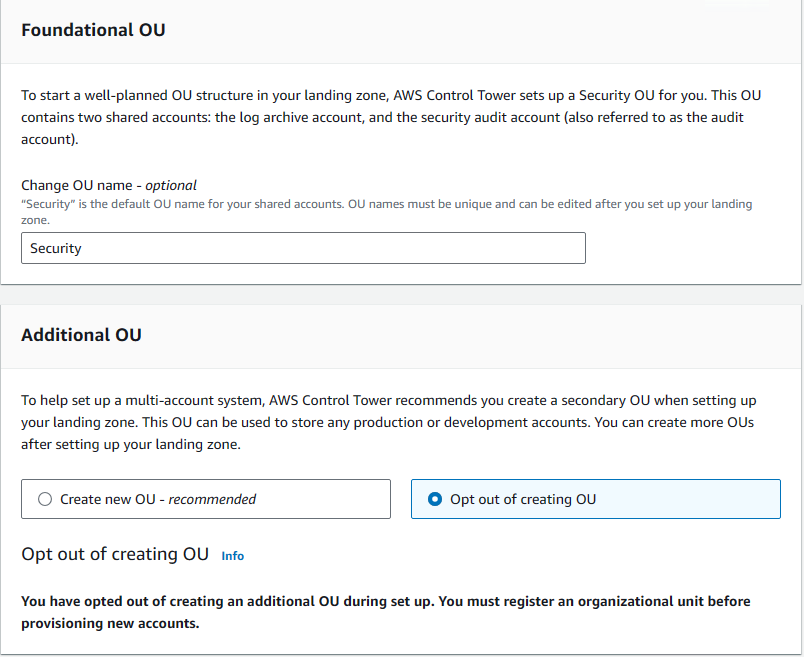
下一步设置 shared accounts. 可以使用现存的账号, 选择 Use existing account 填写 account id 即可. 需要说明的是, 虽然账号可以重用, 资源都是新建的, 即新的 organization-level trail, 新的 logging S3 bucket 等.
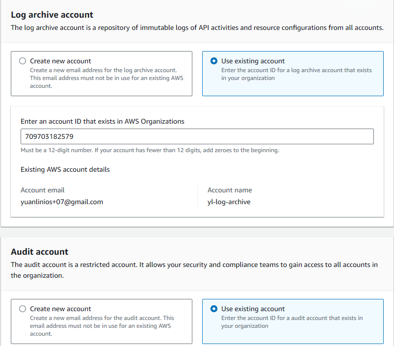
Additional configurations 中按需要设置 AWS IAM Identity Center (SSO), organization level trail, logging retention, KMS 加密. 由于此环境中的 SSO 为单独配置, 选择 self-managed 跳过 Control Tower 的配置即可, 其他保持默认.
最后检查一遍配置, 没问题了勾选 I understand ... 后启动 Set up landing zone. 等待设置完成:
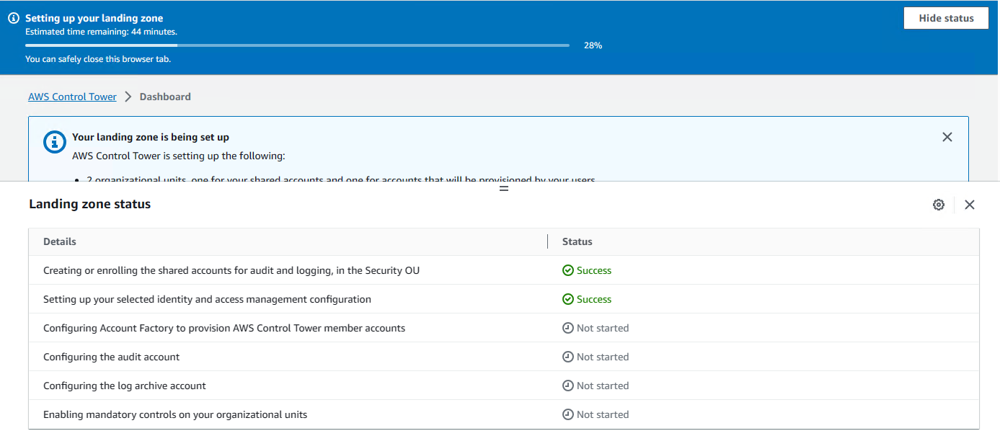
Control Tower Landing Zone 设置成功以后, 浏览一下 controls library 中提供的 controls (guardrails). 相比于 AWS Landing Zone, Control Tower 根据最佳实践和各种安全标准提供了大量预定义 SCP/Config Rules. 按照 Guidance 类型, controls 可以分为 Mandatory, Elective 和 Strongly recommended 三类. 默认只启用了 Mandatory 类型, 用来保护 Control Tower 本身资源的完整性. 可以按照需要从 Elective 和 Strongly recommended 中选择部分启用.
注册组织单元和账号
Control Tower Landing Zone 设置完成后, 可以将现有的 OU 注册进来. 现在 Control Tower Landing Zone 已经支持 nested OU 树形结构, 但是需要注意:
- 注册 OU 并不是递归的, 先注册 parent OU 后才能注册 child OU
- 注册 OU 会自动注册其下直属账号
因此这里先注册 vopsdev-landing-zone OU, 到 Control Tower 的 Organization 下
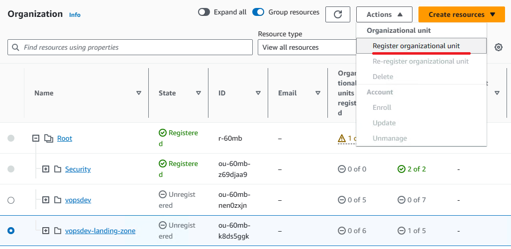
然后同样的方法注册其下的 department/test/production OUs.
清理 AWS Landing Zone 资源
将现存的 OU 注册到 Control Tower Landing Zone 之后, 启用的 controls 就会应用到受管控的 OU 及其下属账户上. 接着就可以清理之前 AWS Landing Zone 的资源了. 如果之前使用 AWS Landing Zone 来设置各个账号的 primary VPC, 则需要先将这些 VPC 内的资源迁移掉, 其复杂程度完全取决于这些 VPC 所承载的工作负载. 这里的示例环境并没有这种情形, 因此直接可以清理其他资源
为了避免在清理过程中有人误操作把 AWS Landing Zone 的资源重新部署出来, 可以到 Codepipeline 中禁用 AWS Landing Zone 流水线 source 阶段到 build 阶段的转换.
终止 Service Catalog 中 AVM 的 provisioned products
到 Service Catalog, Provisioned products 下面, 找到 production name 为 AWS-Landing-Zone-Account-Vending-Machine 那些条目, 选择 action, terminate.
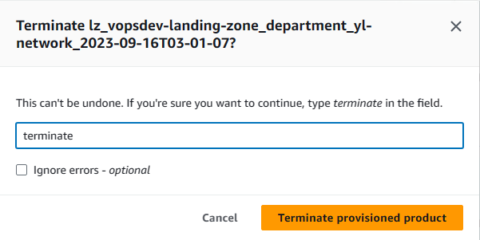
Production name 为 AWS Control Tower Account Factory 的那些 provisioned product 条目来自 Control Tower 的 Account Factory. 每一个注册进来的非 shared service account 会对应一个. 不要误删了.
清理 AWS Landing Zone Baseline resource stacksets
到 Cloudformation stacksets 下逐个清理名为 AWS-Landing-Zone-Baseline-* 的 stackset. 先删除下面的 stack instances, 再删除 stackset. 如果之前终止 provisioned products 运行顺利, 所有的 stack instances 应该都已经被删除, 此时直接删除 stackset 即可.
删除 Service Catalog 中的 Baseline portfolio 与 AVM product
到 Service Catalog, Product list 下选中 AWS-Landing-Zone-Account-Vending-Machine, action 选择 delete product
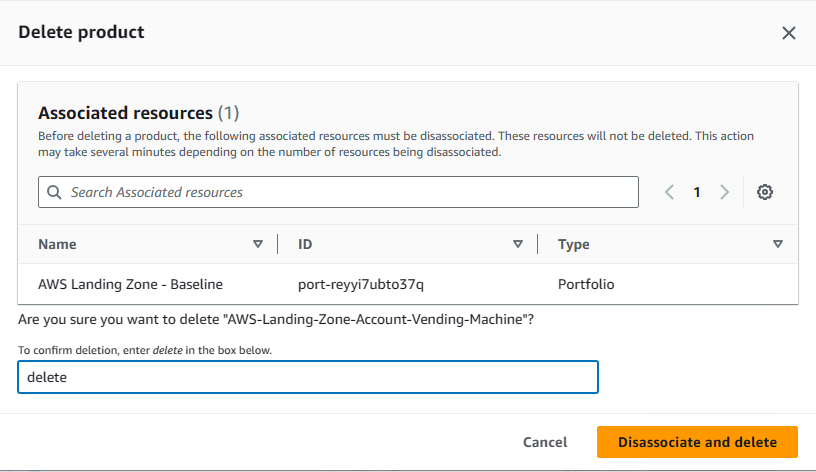
到 Portfolios 下面, 选择 AWS Landing Zone - Baseline, 先删除其下关联的 product/constraints/access, 然后删除该 portfolio.
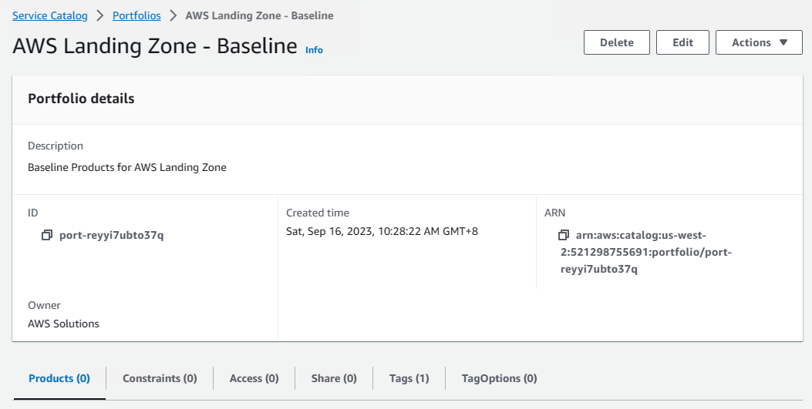
其他的 portfolio 会在后面通过删除 landing zone initiation stack 删除
清理 AWS Landing Zone Core resource stacksets
继续到 Cloudformation stacksets 下清理名为 AWS-Landing-Zone-* 的 stackset. 同样先删除下面的 stack instances, 再删除 stackset.
清理 AWS-Landing-Zone-SharedBucket 这个 stackset 并不会自动删除 AWS Landing Zone 的 log archive bucket + access log bucket, 需要去 log archive account 下手工清理.
删除 AWS Landing Zone initiation stack
在 Cloudformation stacks 下删除 AWS Landing Zone 的 initiation stack. 完成后 AWS Landing Zone 相关的 codebuild, codepipeline, step function, service catalog portfolio 等资源都会被删除.
清理其他剩余的资源
到 Systems Manager 下的 Parameter Store 根据描述信息删除属于 AWS Landing Zone 的参数. 到 Cloudwatch Log groups 下删除 AWS Landing Zone 相关的日志组.
重建定制的基线资源
如果在 AWS Landing Zone 中添加了自定义的基线资源, 则需要通过 Control Tower Landing Zone 的定制化重建出来, 这部分将放到下一篇中.